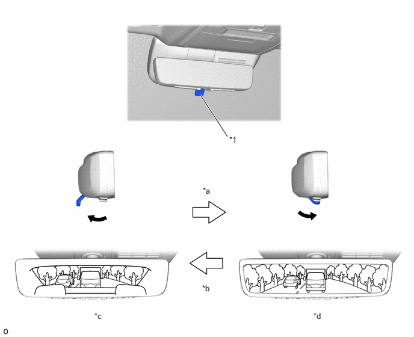
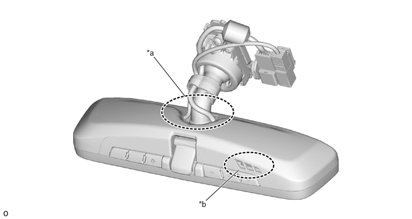

| Last Modified: 10-07-2025 | 6.11:8.1.0 | Doc ID: NM100000002GGM6 |
| Model Year Start: 2024 | Model: Tacoma | Prod Date Range: [12/2023 - ] |
| Title: MIRROR (INT): DIGITAL REAR-VIEW MIRROR SYSTEM: GENERAL; 2024 - 2026 MY Tacoma Tacoma HV [12/2023 - ] | ||
GENERAL
OUTLINE
(a) The digital rear-view mirror system is a driving assist device that displays video from the inner mirror camera assembly on the display in the inner mirror.
(b) By operating the switching lever, optical mirror mode is changed to digital mirror mode.
(c) The digital rear-view mirror system enables the driver to check the rear view without obstruction by the headrest, luggage in the room, etc. In addition, the privacy of rear seat passengers is protected by not displaying a view of the rear seats.
|
*1 |
Switching Lever |
- |
- |
|
*a |
Lever Switch Pulled Forward |
*b |
Lever Switch Pushed Backward |
|
*c |
Optical Mirror Mode |
*d |
Digital Mirror Mode |
PRECAUTION
(a) Knowledge
(1) The digital rear-view mirror may generate heat, but this is not a malfunction.
(2) If a passenger stares at the digital rear-view mirror screen, he/she may feel the effects of car sickness (dizziness).
(3) Do not touch or cover the sensors as it may cause the sensors to operate incorrectly.
(4) The image color may differ from the actual color in dark locations (at night, etc.), but this is not a malfunction.
(5) Depending on the age and health condition of the user, it may take a while until he/she can focus on the digital rear-view mirror screen. If it is difficult to focus on the screen, change to optical mirror mode or stop the vehicle in a safe location to adjust the digital rear-view mirror.
(6) If the digital rear-view mirror screen is too bright, your eyes may get tired. Adjust the brightness to a moderate level.
(7) If you experience discomfort due to flickering lights from vehicles to the rear, change to optical mirror mode.
(8) Do not block the air vent or radiation plate of the digital rear-view mirror. The inside of the digital rear-view mirror may heat up and cause a fire or malfunction.
(9) The operating sound of the cooling fan built into the digital rear-view mirror may be heard, depending on the conditions of the vehicle and surrounding area.
(b) Cautions
(1) Check around the vehicle with your own eyes while driving.
(2) Before driving for the first time or when changing driver, always park the vehicle in a safe place to adjust the digital rear-view mirror and do not adjust it while driving. If the vehicle is driven without first adjusting the mirror, double images may occur. In addition, if the display is difficult to see due to external light reflections caused by a vehicle with a sunroof, etc., close the shade.
(3) The actual size of vehicles and obstacles displayed on the digital rear-view mirror screen may differ from the actual size. When driving in reverse, always directly confirm the surroundings of the vehicle (particularly the area to the rear).
(4) If a vehicle to the rear approaches the vehicle while in a dark location (at night, etc.), the image of the surrounding area may be displayed darker than it actually is. Check around the vehicle with your own eyes.
(5) The image range displayed on the digital rear-view mirror screen and the one displayed on the digital rear-view mirror on optical mirror mode differs, so confirm the difference beforehand.
(c) Troubleshooting
(1) If it is difficult to see the digital rear-view mirror screen due to interference by a strong light source (such as the sun, light from the headlights, etc.) being reflected on the screen, change to optical mirror mode. (If light from the moon roof is reflected, close the sun shade.)
(2) If it is difficult to see the digital rear-view mirror screen because water, snow, mud, etc. is stuck to the roof rear end, change to optical mirror mode.
(3) If it is difficult to see the digital rear-view mirror screen because the screen is used under lighting from halogen, sodium and mercury light sources, etc., change to optical mirror mode.
(d) Handling Guide
(1) When wiping the camera lens, remove dirt from the lens using a soft, wet cloth.
(e) Notice
(1) Do not subject the camera to strong impacts by hitting it, throwing objects at it, etc. The installation position and angle of the camera may become misaligned.
(2) Do not remove, disassemble or modify the camera.
(3) Do not strongly rub the camera lens. Doing so may cause the camera to be damaged and prevent it from capturing clear images.
(4) Do not remove, disassemble or modify the mirror.
(5) When washing the vehicle, do not apply intensive bursts of water to the camera or camera area. Doing so may result in the camera malfunctioning.
(6) If the temperature changes rapidly, such as when hot water is poured on the vehicle in cold weather, the system may not operate normally.
(7) Do not apply organic solvents, wax, oil film remover, glass coating, etc., because the cover of the camera is made of resin. If the camera cover is contaminated, immediately wipe it off.
(8) To ensure sufficient cooling inside the mirror, do not block the intake vents or exhaust duct of the cooling fan.
|
*a |
Exhaust Duct |
*b |
Intake Vents |